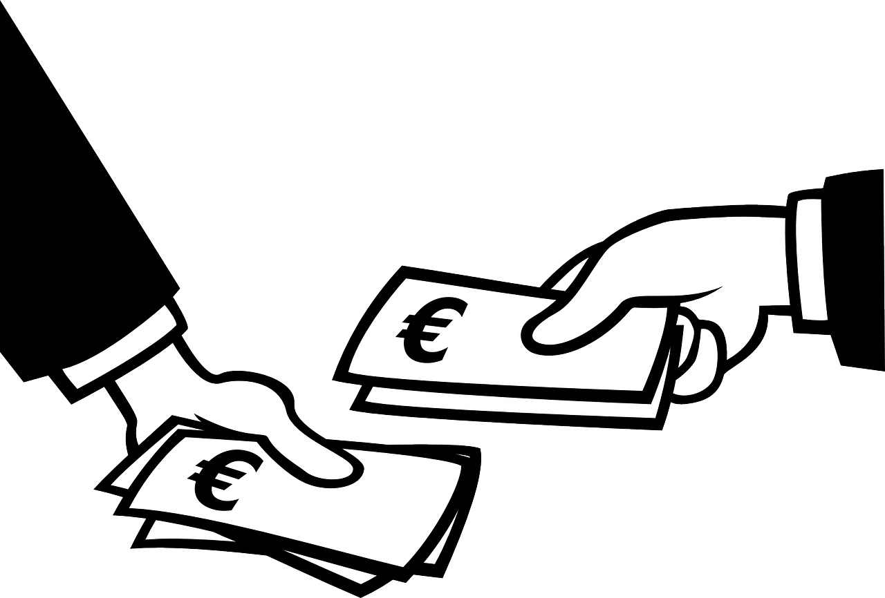

Essential Gaming highly appreciates your contribution to the company. It does not matter how much money you donate, every dolor counts and is valued by this. Your money will help us improve the graphics on our games, the development and overall quality of them. You can make difference. This is donation will be lasting from November 2nd to January the 1st. This will give us enough time to change our game quality and become a larger community. Highest Donater, On the 6th of August Essential Gaming recieved a donation from one of our long time players/supporters 5ale. 5ale donated $2,500.00 to our Donate paid exceding the previous highest donator Snykyprwn8 who had the record previously with $2000.00. If you guys want to donate go click on the donation link at the top of this page and go there and donate as much you want as each dollar would give us a bigger range of oppertunities to improve our games. The highest donater always gets featured on the News page and this page.
|
 |